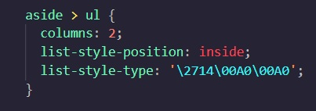

<p style="color: blue;"></p> - Representação por nome
<p style="color: #0000ff;"></p> - Representação por código hexadecimal
<p style="color: rgb(0, 0, 255);"></p> - Representação em RGB (Red, Green, Blue)
<p style="color: hsl(240, 100%, 50%);"></p> - Representação por características (Hue, Saturation, Luminosity)
<p style="color: rgb(0, 0, 255, 0.532);"></p> - Representação em RGB com valor de transparência
<p style="color: hsl(240, 100%, 50%, 0.532);"></p> - Representação por características com valor de transparência
Site interessante na escolha de cores e paletas: Adobe Color
<p style="background-image: linear-gradient(to right or to left or to top or to bottom or deg, yellow, gray);"></p> - Representação de degradê linear em um parágrafo utilizando as CSS
<p style="background-image: radial-gradient(circle, green, gray);></p>" - Representação de degradê radial em um parágrafo utilizando as CSS
* {} - Utilização nas CSS para configurações globais
<p style="font-family: 'Courier New', Courier, monospace"></p> - Escolha da sequência de famílias tipográficas utilizada, com exemplificação
<p style="font-size: cm or mm or in or px or pt or pc or em or ex or rem or vw or vh or %"> - Escolha do tamanho da fonte, com todas as principais unidades de medidas utilizadas
<p style="font-weight: lighter or normal or bold or bolder or 100->900"></p> - Escolha do peso da fonte
<p style="font-style: italic or normal or oblique"></p> - Possibilidade de utilizar o estilo itálico no texto
<p style="text-decoration: none or underline"></p> - Possibilidade de colocar no texto a decoração underline
Link para site que disponibliza fontes para download: DaFont
<p style="text-align: center or justify or left or right"></p> - Alinhamento do texto com as CSS
<p style="text-indent: 5px"></p> - Exemplificação de espaçamento no texto
Pseudo-classes são estados ou condições específicas de um elemento que permitem aplicar estilos em situações especiais. Exemplos de pseudo-classes: :hover :visited :active
Pseudo-elementos são partes de um elemento que podem ser acessadas e estilizadas através das CSS. Exemplos de pseudo-elementos: ::after ::before
<p style="border-style: solid or dashed or groove or double or dotted;"></p> - Exemplo com os principais tipos de estilos de bordas
<header></header> <main></main> <section></section> <article></article> <aside></aside> <footer></footer> - As Grouping Tags
<p style="box-shadow: 1px 1px 1px black;"></p> - Exemplo de utilização de sombras em caixas
<p style="border-radius: 10px 0px"></p> - Exemplo de utilização de bordas arredondadas em caixas
Link para site que permite a projeção e o design de páginas web: MockFlow
